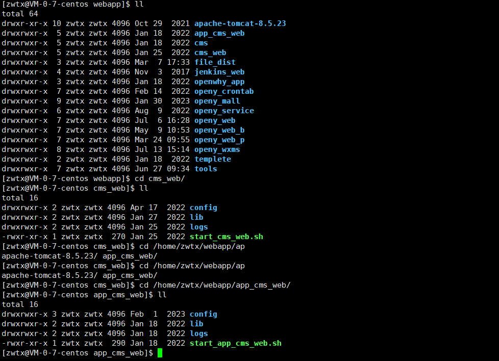

禅道IP
账号1：jiazihan 密码：jzh123
Jenkins构建IP
登录账号：zwtx 密码：zwtx
注意事项：JENKINS服务在服务器中的路径卡死时手动到重启：/home/zwtx/webapp/jenkins_web/bin/jenkin_start.sh
Jenkins切换主干与测试环境时修改路径如下：（web与定时任务切换时不需要修改）
openy-wxms分支：svn://124.223.81.115/zwtx/智为天下/研发部/source/openy-wxms/api/branches/openy-wxms-20230421
openy-wxms主干：svn://172.17.0.7/zwtx/智为天下/研发部/source/openy-wxms/api/trunks
activities-service分支：svn://124.223.81.115/zwtx/智为天下/研发部/source/openy-service/activities-service/branches/activities-service-20230421
activities-service主干：svn://172.17.0.7/zwtx/智为天下/研发部/source/openy-service/activities-service/trunks
openy-web分支：svn://124.223.81.115/zwtx/智为天下/研发部/source/oswn/branches/openy-web-20230421
openy-web主干：svn://172.17.0.7/zwtx/智为天下/研发部/source/oswn/trunk
cms-service分支：svn://172.17.0.7/zwtx/智为天下/研发部/source/openy-service/cms-service/branches/cms-service-20220804
cms-service主干：svn://172.17.0.7/zwtx/智为天下/研发部/source/openy-service/cms-service/trunks/cms-service
cms-web分支：svn://172.17.0.7/zwtx/智为天下/研发部/source/openy-cms/branches/openwhy-cms-20220518
cms-web主干：svn://172.17.0.7/zwtx/智为天下/研发部/source/openy-cms/trunk/openwhy-cms
app-cms-web分支：svn://172.17.0.7/zwtx/智为天下/研发部/source/openy-cms/branches/app-cms-20220518
app-cms-web主干：svn://172.17.0.7/zwtx/智为天下/研发部/source/openy-cms/trunk/app-cms
服务器服务手动启动

测试服务器
地址：124.223.81.115 端口号：22 账号：zwtx 密码：zwtx!@#
启动CMS-WEB
-->>cd /home/zwtx/webapp/openy_service/cms-service -->> ./start_cms-service.sh
启动CMS-API
-->>cd /home/zwtx/webapp/openy_service/cms-service -->> ./start_cms-service.sh
启动CMS-APP-WEB
-->>cd /home/zwtx/webapp/app_cms_web -->> ./start_app_cms_web.sh
CMS-WEB路径
-->>cd /home/zwtx/webapp/cms_web/ -->> ./start_cms_web.sh
CMS-API路径
-->>cd /home/zwtx/webapp/openy_service/cms-service/ -->> ./start_cms-service.sh
定时任务
-->>/home/zwtx/webapp/jenkins_web/bin/jenkin_crontab_branch.sh
活动
-->>/home/zwtx/webapp/jenkins_web/bin/jenkin_activities-service.sh
注意事项：起不来的时候可先启动：-->>/home/zwtx/webapp/openy_service/eureka-server-->>start_eureka-server.sh（测试环境服务或jinkens启不来时）
服务器DIST包部署
-->>cd /home/zwtx/webapp/openy_wxms/web-->>rm -rf dist-->>rm -rf dist.zip-->>rz XXX/dist.zip-->>unzip dist.zip